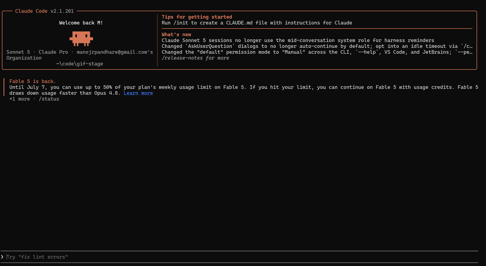

A real agent hits the gate.
Claude Code attempting a command — intercepted by Termaxa, live, inside the agent's own prompt. Nothing staged.

git reset --hard could erase them. State moved to ~/.termaxa, out of git's reach. (v0.8)open source under MIT / Apache-2.0
no feature gates. no license keys. ever.
cloud sits on top of the free core, never in front of it.
solo maker · builds developer infrastructure
I build with Claude Code every day, and I kept getting nervous handing it commands that touch git history and production databases. The built-in "allow this command?" prompt tells you what it wants to run — not what will actually happen.
So I built the thing I wanted: a gate that shows the real consequence, takes a backup before you approve, and lets you roll back. The first time I pointed a live agent at it, the agent chained a destructive command behind a harmless one and slipped past a naive rule. Watching that happen is why Termaxa now splits compound commands and judges each part — that exact bypass is a regression test today.
termaxa 0.11.4